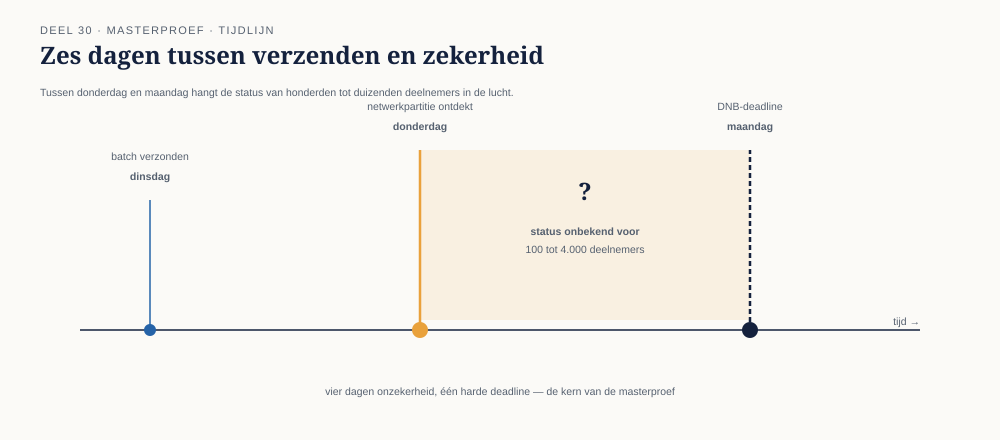

30.0 Vlak voor de deadline
Sectie 1 van 7Het is oktober 2027. De wettelijke deadline van 1 januari 2028 nadert. Meridiaan heeft, in de weken vóór de laatste, grote invaargolf, een asynchrone keten in productie die — op basis van alle patronen uit deze cursus — als robuust is beoordeeld: onveranderlijke events (deel 23), een georkestreerde, blokkerende datakwaliteitscontrole met een expliciete compensatiegrens (deel 25), poison-message-isolatie en resilience-maatregelen (deel 26-27), en een volledige, auditeerbare event backbone (deel 28-29).
Op een donderdagochtend meldt het operationeel beheerteam een afwijking: voor een deel van de laatste batch — precies hoeveel is nog onduidelijk, ergens tussen de honderd en de vierduizend deelnemers — is een invaar-event verzonden, maar is de bevestiging dat de externe pensioenadministrateur (die de definitieve validatie namens Meridiaan uitvoert) het event heeft ontvangen en verwerkt, nooit teruggekomen. Dit is niet het incident van deel 26 (poison message) — geen enkel bericht loopt vast. Het is ook niet het incident van deel 19 (dual-write) — de events staan onveranderlijk vastgelegd in de invaaradministratie. Het probleem zit specifiek in de koppeling met de externe administrateur: door een netwerkpartitie tussen Meridiaan en die administrateur, gecombineerd met een niet volledig sluitende consumer group-configuratie (deel 16) bij de administrateur zelf, is onduidelijk of de events daadwerkelijk zijn aangekomen en verwerkt, of onderweg zijn vastgelopen.
De DNB-rapportagedeadline voor deze batch is over vier dagen.
Het bestuur van Meridiaan staat voor een keuze tussen twee risicovolle opties, en heeft Caspar gevraagd — samen met het volledige integratieteam — een onderbouwd advies te presenteren.
